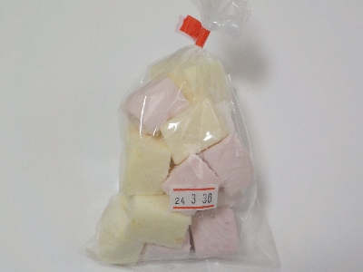
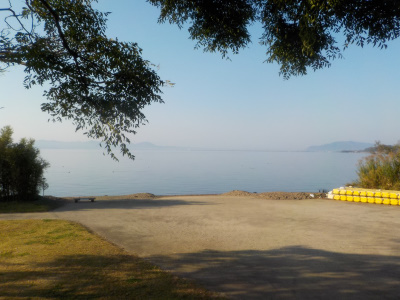
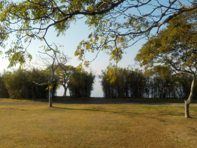
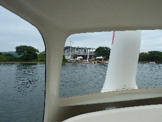
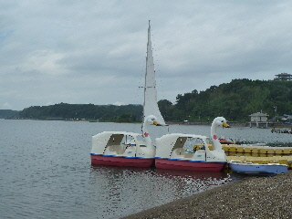
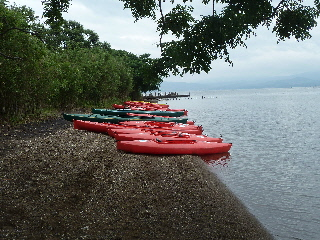

秋鹿なぎさ公園でギモーヴを買いました。
2024/03/23

マシュマロに似た感じのお菓子「ギモーヴ」です。初めて食べたかも？。
マシュマロよりもちょっと硬くて弾力がありました。ネットによると、マシュマロは卵白が入ってギモーヴよりさらにフワフワらしいです。
ギモーヴでも十分柔らかかったです。
島根県松江市岡本町1048番地1
2024/03/23

マシュマロに似た感じのお菓子「ギモーヴ」です。初めて食べたかも？。
マシュマロよりもちょっと硬くて弾力がありました。ネットによると、マシュマロは卵白が入ってギモーヴよりさらにフワフワらしいです。
ギモーヴでも十分柔らかかったです。
2022/11/12


休憩に寄りました。道の駅のお店は朝9時オープンで、私が寄った時間はまだ閉店中でした。
とくにやることないので景色をちょっと見てました。
2015/07/19
今日は宍道湖でマリンスポーツを楽しみました。

白鳥ボートから見た、道の駅秋鹿です。


バナナボート、ヨーット、カヌーに乗って楽しみました。
宍道湖でマリンスポーツ？って気もしましたが、波が少ないのでとっても快適でした。
面白かったので来年も参加したいです。
あと、普段の服装にライフジャケットを着て遊べるので、気楽に参加出来て良かったです。